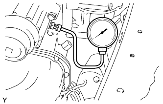

Lubrication System (2GR-FE) Function Inspection |
| 1. Inspect Engine Oil Level |
Warm up and stop the engine; after 5 minutes, check that the oil level is between the L and F marks on the oil level gauge. If the oil level is low, check for leaks and add oil up to the F mark.
| 2. Inspect Engine Oil Quality |
Inspect the oil for deterioration, water entry, discoloration or thinning, and replace the oil if the quality is visibly poor.
| 3. Inspect Oil Pressure |
Remove the oil pressure switch assembly (see)
Install Oil Pressure Gauge
 |
Install the pressure gauge via an adapter.
Engine Warm-up
Measure Oil Pressure
| Engine Speed | Oil pressure |
|---|---|
| At idle | 80kPa{0.8kgf/cm2} or more |
| At 6000r/min | 380kPa{3.9kgf/cm2} or more |
Remove Oil Pressure Gauge
Install the oil pressure switch assembly (see)
Engine Oil Leak Inspection